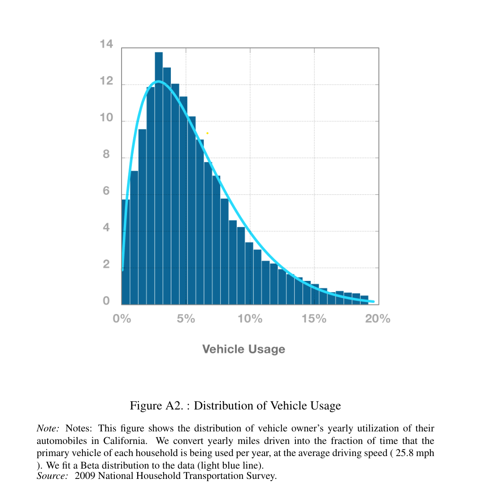
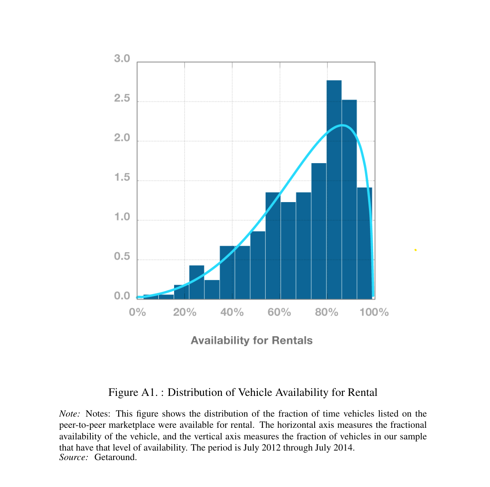

In an era where convenience and sustainability are paramount, the concept of carsharing has emerged as a transformative solution to urban mobility challenges. Kimo is a peer-to-peer carsharing platform designed to revolutionize the way individuals access transportation. By connecting vehicle owners with individuals in need of short-term transportation, Kimo offers a convenient, cost-effective, and sustainable alternative to traditional car ownership and rental services.
The sharing economy is a system where individuals share resources, goods, and services, often facilitated by online platforms. This model allows for the efficient use of assets like cars and accommodation. Examples include companies like Airbnb for accommodation sharing and Uber for ride-sharing. The sharing economy promotes resource efficiency, cost savings, and community interaction.
The sharing economy addresses the issue of underutilization of certain products. For instance, cars typically remain unused for the majority of the time, as illustrated by the Distribution of Vehicle Usage graph.
One of the primary challenges people encounter when attempting to rent a vehicle is the availability of cars. Data from the carsharing company Getaround indicates that the sharing or peer-to-peer model offers significantly high availability rates, as depicted in the graph below.
There already exists a number of services that offer carsharing services. Most notably:
The motivation behind developing a carsharing app stems from the specific market I intend to target, namely my home country of Morocco. Put simply, there is currently no peer-to-peer carsharing service available in Morocco, and I believe that people would greatly benefit from it for several reasons. Morocco is a popular tourist destination, attracting over 14.5 million visitors in 2023. A significant portion of these visitors opt to rent cars, leading to frequent shortages in rental cars. Additionally, the current car rental market in Morocco is valued at 5.84 billion Dirhams per year, indicating a substantial demand for car rental services. This gap in the market presents a unique opportunity to introduce a peer-to-peer carsharing service, especially considering the rising popularity of the sharing economy globally.
Now that we have a solid economic incentive to build the app, let’s take a look at the requirements for building such an app.